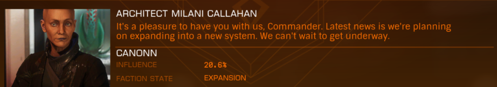

If you are planning on colonising for Canonn, here are some things you may want to consider whether you are building a chain of systems or just colonising from an existing Canonn faction system.
There are two Canonn factions that can be used for colonisation. Canonn and Canonn Deep Space Research. If you wish to join one of the squadrons make an application in game and then ask someone on the discord to approve you.

Canonn was the original faction with Varati as it’s home system and prior to colonisation, controlled about 130 systems. Canonn is supported by the Canonn [CANO] squadron.
Canonn Deep Space Research was founded in the Canonnia system and was limited to a single system. But with the advent of colonisation the faction was able to expand to the bubble and played a large part in the Polaris Bridge project. Canon Deep Space Research is supported by the squadron of the same name [CDSR]
There are two ways of expanding the Canonn factions across the galaxy through colonisation.
By far the easiest way is to find an existing Canonn controlled station and use the colonisation contact there. When you colonise from a station owned by Canonn then Canonn will be in control of your new colony. Just make sure the station is controlled by a Canonn faction.
Sometimes there is no Canonn faction near the system you want to colonise. Rather than build a chain from the nearest Canonn faction, you can colonise from any nearby system. If you are a member of one of the Canonn Squadrons, then the Canonn faction will be inserted into the BGS in third place.
It is very important that after completing your initial station you do not start any new building. The more developed your system is, the harder it is to take control through BGS.
Getting control of the system will require you to perform missions for your faction. The mission board will open on the first Thursday after colonisation. So the optimal time to finish your colony is on Wednesday night. You want missions that give influence to your faction.
Eventually you will face a war or an election to take control of the station. If you are in a war you will need to perform combat in a CZ. For an election you want to take missions that will influence the election.
Taking control of a system at the end of a chain should take less than a week of modest effort, it may take longer if your system is surrounded by other colonies.
If you are creating a chain of systems, it is important that you make sure that the first system you create is Canonn controlled before you onward colonise. This will ensure that the Canonn faction controls every system in the chain. Usually this would mean that you will need to work the BGS at the start of the chain so that subsequent claims will put the Canonn faction into first place.
You can also invite commanders from another Canonn squadron to colonise the next system in the chain so that Canonn will have two factions in the system.
The sort of places we would want to colonise are places of scientific interest. Systems with bodies that collide. Systems with Biology or Geology. Black Holes, White Dwarfs, Neutron stars or places with some historical significance. Usually that would require a chain of systems.
If you have a chain you could start a member project. Put an ad in #help_wanted on our discord or create a member event. If you can think of a way of making it a fun group exercise or bribing people with stations named after them or just selling a scientific angle, that could all help. But bear in mind it is quite hard to divert people from their own projects to help with yours unless there is some compelling reason and many members my be tured of hauling goods.
Canonn has a small fleet of fleet carriers that can be put at your disposal for project. Ask in #fleet_carriers or message LCU No Fool Like One. While you will still need to haul materials to fill them, is is more efficient to fill many carriers in advance and then park them in your chain ready for unloading.
Our friends at Operation IDA have a public form where you can request help building your system. However they will only help build an initial port because that has a time limit. You can find their form here
For BGS help #minor_faction_chat on our discord can give you advice, and you may be able to recruit some people to help with BGS
Thank you for supporting Canonn. Good luck with your colonisation efforts.